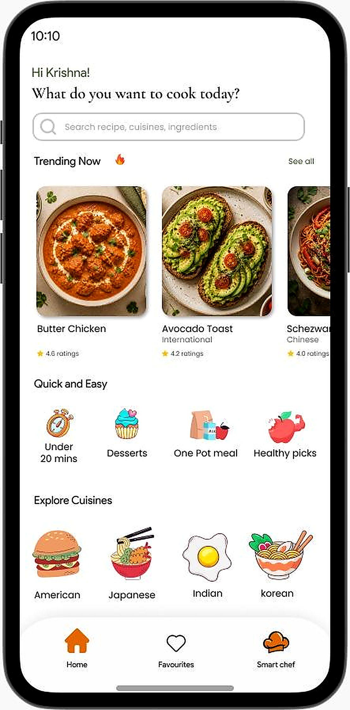
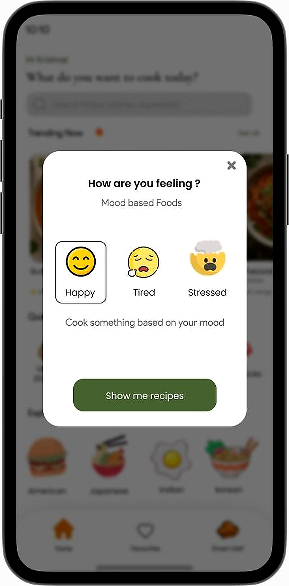
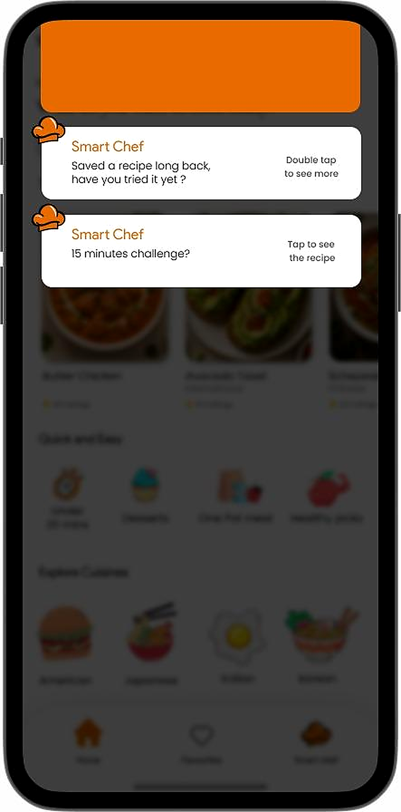
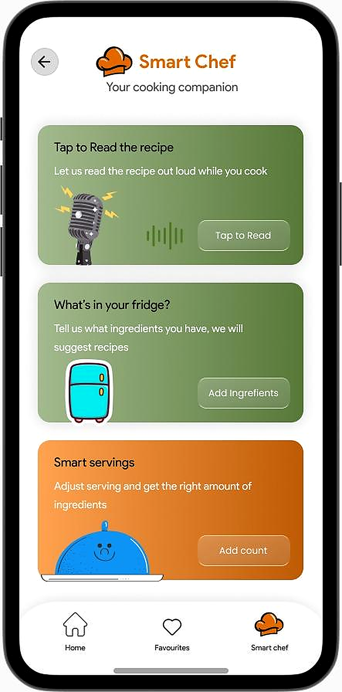
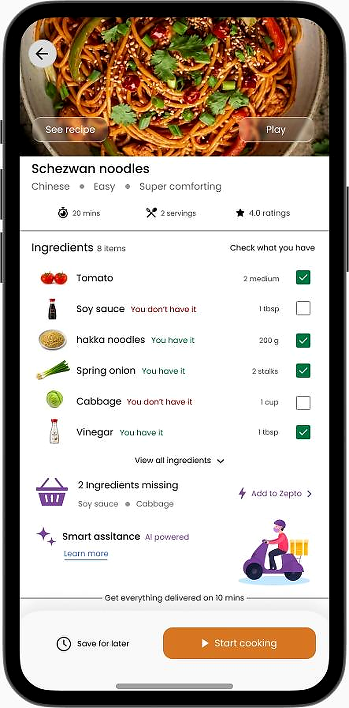

Creating new revenue opportunities without compromising the cooking experience.

An established recipe platform already has a loyal user base and a growing library of recipes covering local and international cuisines.
“I want to increase revenue from my existing platform, but I don't want monetization to come at the cost of my users' experience.”
How might I create new business opportunities within the recipe experience without frustrating the users who already love the product?
Key pain points identified from my findings and user research.
Users come to find a recipe, but often have little reason to continue exploring once they find what they need.
Lower engagement and fewer opportunities to build a recurring habit.
With recipes spanning local and international cuisines, users may struggle to discover recipes that actually match their preferences, mood, ingredients or time available.
Valuable content remains undiscovered, limiting engagement opportunities.
New revenue opportunities can easily feel forced when they interrupt the user's primary goal: finding and cooking a recipe.
Loss of existing users if monetization is implemented poorly.
Observations & opportunity mapping across the user lifecycle.
70% of sessions are single-recipe view sessions. Users achieve their immediate goal and exit, leaving a low weekly return rate.
Give users a relevant reason to keep exploring after initial intent by introducing personalized recommendations.
Users find it hard to filter recipes based on real needs. An overwhelming number of recipes leads to decision fatigue.
Make discovery easier and more personal. Offer smarter filters and context-aware suggestions.
Users need ingredients right after choosing a recipe, forcing them to switch to grocery apps. Static ads break cooking flows.
Connect with users at the moment they have a real need by offering seamless, in-context ingredient delivery.
“The biggest opportunity was not to add more features, but to create meaningful experiences that help users discover better, cook easier and stay engaged — while supporting the business goals.”
Solving real user problems with meaningful, experience-driven design updates.
Mood-based recommendations and personalized content feeds to keep users exploring.
Contextual search filters and smart suggestions via the companion assistant.
Seamless grocery delivery integration at the point of action for missing ingredients.
To reduce bounce rates and increase active browsing time, I introduced emotional/mood-based filters on the app dashboard. Instead of having to think of recipes, users can simply select how they feel.



I designed the "Smart Chef" companion system to help users find recipes based on what they already have at home, avoiding decision fatigue and reducing food waste.
Instead of placing intrusive banner ads, I introduced a context-aware utility feature: single-click ingredient purchase via Zepto 10-minute grocery delivery.

By improving the moments around cooking, the product can create more value for users without compromising the experience for the sake of monetization.
Let's work together to create intuitive and high-impact digital experiences.